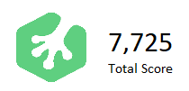

The Scion Coalition Scheme is an intensive, specially tailored training program run by Netmatters in order to give willing candidates the opportunity to enter the industry as web developers. Under the supervision of senior web developers, scions generally aim to complete training within six to nine months. The course is intensive and therefore the level of learning achieved is extensive in a short space of time.
Treehouse is an online learning community, featuring videos covering a number of topics from basic HTML to C# programming, iOS development, data analysis, and more. By completing courses users can earn points, allowing them to track their progress and see how much they?ve covered in certain areas.
